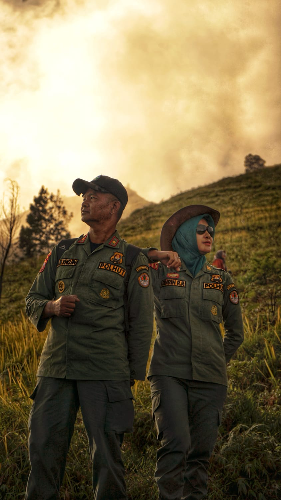
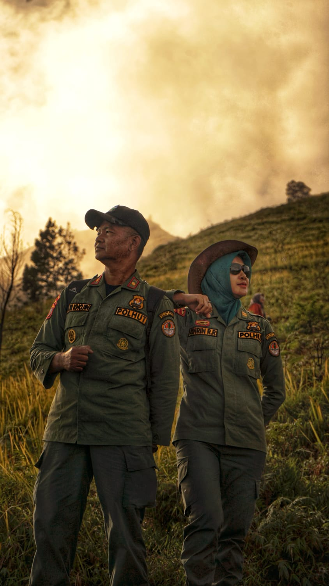

Tentang Kami

Rintis Arah adalah sebuah komunitas pecinta alam dan pendaki gunung yang dibentuk dengan semangat menjelajahi alam secara bertanggung jawab dan bermakna. Komunitas ini bukan hanya sekadar tempat berkumpul para pendaki, tetapi juga ruang tumbuh bagi jiwa-jiwa muda yang sedang mencari arah hidup melalui interaksi dengan alam, perjalanan yang reflektif, dan hubungan yang tulus antar sesama anggota.


 
